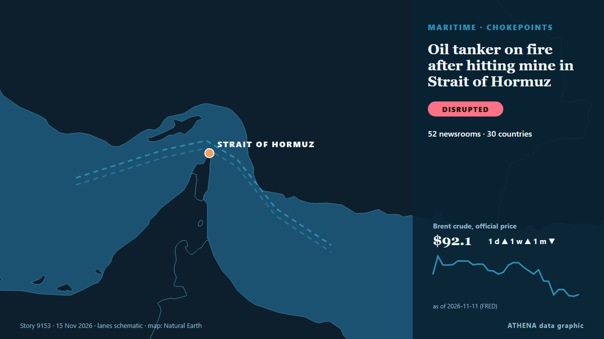

ATHENA Glaux Intelligence — Veille mondiale de l'information — chaque chiffre expliqué
Chaque titre, vérifié dans plusieurs pays.
ATHENA Glaux suit 630 médias dans le monde. Une information devient un événement vérifié seulement lorsque des médias indépendants la rapportent. Chaque événement indique qui l'a publiée en premier et un score de risque avec ses raisons.
Des articles arrivent de médias indépendants : quand deux se rejoignent sur la même histoire, un événement vérifié naît.
Trois façons de lire aujourd'hui
Commencez par celle qui convient à votre tempsÉvénements vérifiés
Classés selon l'ampleur de la couverture
- Netanyahu aides suspected of coordinating arrests of Arab party activists during Israel's election: Report159 médias · 56 paysRisque 5.0
- Trump says Gulf allies urged restraint on Iran, admits war hurt Republicans in midterms105 médias · 43 paysRisque 6.8
- Kremlin confirms Putin, Xi Jinping and Trump to hold trilateral meeting in China on November 1972 médias · 37 paysRisque 6.2
- US floated idea swapping Ukrainian territory for NATO membership: Zelensky56 médias · 33 paysRisque 4.2
- Israeli drone strike kills 2 Palestinians in Gaza, and other Mideast news53 médias · 26 paysRisque 6.2
Bureau d'analyse
Posez une question et lisez une évaluation argumentée d'un sujet majeur, avec ce qui la démentirait.
Ouvrir le Bureau d'analyse ›Comment ATHENA vérifie une information
- CollecterLes reportages arrivent de médias indépendants dans de nombreux pays.
- CroiserQuand deux médias se rejoignent sur la même information, elle devient un événement vérifié.
- ExpliquerChaque événement montre qui était le premier, jusqu'où il s'est propagé et pourquoi le risque est ce qu'il est.

Commerce et industrieOil tanker on fire after hitting mine in Strait of Hormuz
Coalition says it destroyed two ballistic missile launchers The Coalition has released footage it says shows the targeting and destruction of two ballistic missile launch platforms. de Gulf News
Les titres sont affichés en anglais, tels que publiés.
Trump says Gulf allies urged restraint on Iran, admits war hurt Republicans in midterms
With the political constraints imposed by the US midterm elections lifted, Donald Trump may become more erratic and unpredictable. de The Scotsman
2 violating oil tankers explode in south Hormuz Strait: IRGC
"One of the vessels is a supertanker; it is currently engulfed in flames following a powerful explosion," the Iranian Revolutionary Guard Corps (IRGC) Navy spokesperson said. de The Jerusalem Post

Netanyahu aides suspected of coordinating arrests of Arab party activists during Israel's election: Report
Former deputy governor tells Central Banking prime minister’s proposals are ‘stupid’ and ‘crazy’ de Central Banking
Hamas confirms commander involved in Oct. 7 attack killed in Israeli strike
Israeli forces killed Samir Abu Younis, a senior commander in Hamas’s military wing, during a strike in Gaza. de Arab News
Yemen government forces withdraw from area near Bab el-Mandeb Strait, Houthis in control
Yemeni forces fighting for the internationally recognised Saudi-backed government said on Sunday that they were withdrawing from an area overlooking the strategic Bab el-Mandeb Strait, leaving the… de Business Recorder
Géopolitique, politique et sécurité
Plus ›Iran targets US military base in Bahrain with drone attack
It marks the second attack on the country in three days and comes as the US and Iran remain locked in a stand-off over the Strait of Hormuz. de BBC News
- Diplomatie et sommets
Trump admin warns air travellers of another messy day
- Guerres et conflits
Bahrain intercepts Iranian aerial attacks as Tehran says it attacked US base
- Guerres et conflits
Drone strikes reportedly hit 3 commercial ships near Romania's Black Sea coast
- Diplomatie et sommets
Eisenkot says Netanyahu cannot stay in office ‘a minute longer’
Économie, finance et marchés
Plus ›Japan's economy unexpectedly contracts in third-quarter as elevated energy costs bite
Energy subsidies for households had reportedly expired in September, exposing the economy to the higher energy prices brought about by the Iran war. de CNBC World
- Inflation et taux d'intérêt
EUR/JPY Price Forecast: Holds gains above 176.50, but downside bias prevails below 100-day SMA
- Actions, obligations et marchés
Russell Brand Maintains Innocence In Message Through Wife From Behind Bars
- Inflation et taux d'intérêt
Sunday Fed talk: Schmid says inflation would still be near 3% without energy, Fed has work to do
- Crypto et actifs numériques
Binance resumes withdrawals after $6.34 billion crypto hack
Commerce, industrie et infrastructures
Plus ›US blames system upgrade for longest nationwide FAA ground stop since 9/11
Sean Duffy, the country's transportation secretary, said his agency is 'going to hold people accountable'. de Al Jazeera English
- Transport maritime et ports
Tanker steering problem caused New Orleans ship collision
- Aérien, rail et route
US flight suspension linked to copper wire upgrade, transport secretary says
- Aérien, rail et route
US air travel disruptions continue into third day
- Transport maritime et ports
Iran says 2 oil tankers hit mines near Strait of Hormuz, 1 sinks
Énergie, ressources et environnement
Plus ›Kiribati vice president Dr Teuea Toatu dies
Dr Teuea Toatu's passing was announced by Cabinet colleague Ruth Cross Kwansing on Sunday night. de RNZ National
- Pétrole et gaz
'Unauthorised supertanker' carrying over 2M barrels of oil sinks in Hormuz: Iran
- Pollution et biodiversité
Pope laments Amazon’s ‘cry,’ says rainforest, peoples under threat
- Climat et politique climatique
CLIMATE CASH SHOWDOWN: Africa battles EU ‘delaying tactics’ at COP31 over $120bn climate adaptation lifeline
- Climat et politique climatique
Albanese caught between climate ambition and political reality at COP31
Technologie, IA et cybersécurité
Plus ›US rocket firm ULA fails to deploy 40 Amazon Leo satellites after flight anomaly
Vulcan vehicle experiences malfunction 10 minutes after liftoff from Florida during company's first mission in months. de Anadolu Agency (English)
- Puces et calcul
Jensen Huang discusses comeback as Nvidia CEO with allies, FT reports
- Puces et calcul
Tears and disbelief in Taiwan, where Jensen Huang is a celebrity
- Intelligence artificielle
South Korea's top scorer in tax accountancy exam admits cheating
- Espace et satellites
NASA’s Voyager 1 nears historic milestone of reaching one light-day from earth
Entreprises et investissement
Plus ›Bessent calls for ‘dramatic shakeup’ at Nvidia, urges outside CEO
Bessent has criticized Howard Lutnick’s department over suspected chip diversion to China while defending President Donald Trump’s handling of the matter. de CNBC World
- Concurrence
Family Dollar Will Pay $63 Million for Inflated Price Claims
- Stratégie d'entreprise
Reps from 115 Fortune Global 500 to attend APEC CEO Summit
- Stratégie d'entreprise
NBI to launch public complaints hotline in December
- Stratégie d'entreprise
Yang Ming Marine Transport Sees Strong Revenue and Profit Growth in Q3 2026
Aujourd'hui en chiffres
| 01:00 | 239 |
|---|---|
| 02:00 | 256 |
| 03:00 | 235 |
| 04:00 | 248 |
| 05:00 | 344 |
| 06:00 | 365 |
| 07:00 | 464 |
| 08:00 | 368 |
| 09:00 | 486 |
| 10:00 | 358 |
| 11:00 | 531 |
| 12:00 | 345 |
| 13:00 | 529 |
| 14:00 | 622 |
| 15:00 | 409 |
| 16:00 | 458 |
| 17:00 | 452 |
| 18:00 | 382 |
| 19:00 | 369 |
| 20:00 | 315 |
| 21:00 | 290 |
| 22:00 | 229 |
| 23:00 | 239 |
| 00:00 | 295 |
Risque des événements du jour
Les plus couverts
Signaux émergents
- Hausse soudaine · ActifBab
- Hausse soudaine · ActifSamir Abu Younis
- Hausse soudaine · ActifIran-aligned Houthis
- Hausse soudaine · ActifECO
- Nouveau nom dans l'actualité · ActifNizhnekamskneftekhim
Restez informé
ATHENA Weekly Risk Picture
Les plus grands risques géopolitiques, économiques et maritimes de la semaine, recoupés et notés.
Chaque vendredi à 8 h (heure d'Athènes) · gratuit · en anglais
S'abonner gratuitementATHENA sur Telegram
Les nouvelles dès leur publication : les événements urgents de risque 6 ou plus, un récapitulatif horaire, les mises à jour des suivis de risque et le briefing quotidien à 10 h.
Gratuit · publications en anglais · désinscription à tout moment
Rejoindre le canalL'inscription est gérée par beehiiv avec double confirmation : rien de ce que vous saisissez n'est envoyé à ATHENA, et chaque numéro contient un lien de désinscription.
Suivi des risques
Plus ›Risques mondiaux — semaine 46, 2026 (9–15 nov.) ›